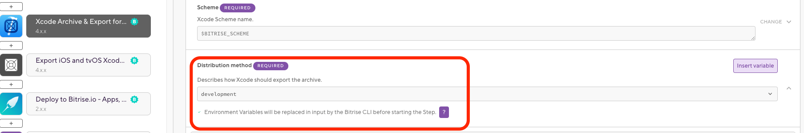
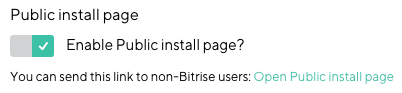
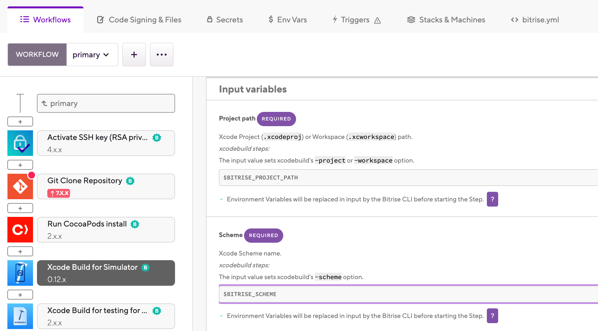
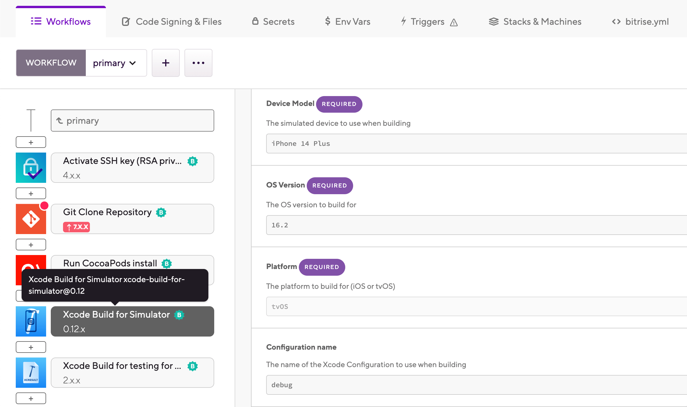
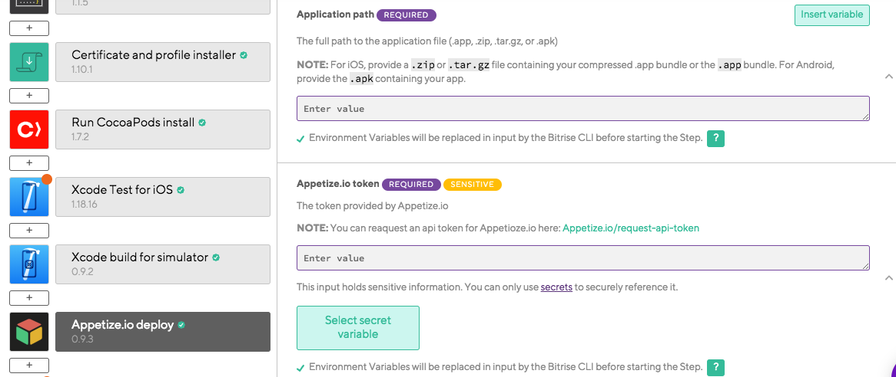

- Welcome to Bitrise documentation!
- Getting started
- Signing up for Bitrise
- Creating your first Workspace
- Adding a new app
- Webhooks and triggers
- Builds and Workflows
- Testing and deploying
- Migrating to Bitrise
- Signing up for Bitrise
- Creating your first Workspace
- Adding a new app
- Getting started with iOS apps
- Getting started with Android apps
- Getting started with React Native apps
- Getting started with Flutter apps
- Getting started with Ionic/Cordova apps
- Getting started with Expo apps
- Infrastructure
- Accounts
- Workspaces
- Apps
- Workflows and Pipelines
- Builds
- Code signing
- Testing
- iOS testing
- Android testing
- Flutter testing
- React Native testing
- Device testing with Firebase
- Test Reports
- Test Reports
- Exporting to Test Reports from any Step
- Running unit and UI tests for iOS apps
- Installing an .ipa file
- Registering test devices for iOS apps
- Device testing for iOS
- Running Android unit tests
- Device testing for Android
- Running tests in the Visual Studio App Center
- Running Detox tests on Bitrise
- Measuring your code coverage with Codecov
- Deploying
- Insights
- Bitrise CLI
- API
- References
- Getting started
- Bitrise Docs
iOS deployment
To use Bitrise to deploy an iOS app to any platform, you will need code signing files and you'll have to archive your Xcode project and export a signed IPA file.
Once you built your app and ran unit tests and UI tests on it, it’s time to deploy it.
To deploy an iOS app to any platform, you need:
Code signing files.
To archive your Xcode project and export a signed IPA file.
Our guides delve into the specifics of these two basic requirements and show how to use our Steps to deploy the app in the exact way you want to!
We also recommend checking out Ship, our deployment solution that aims to save you a lot of headache in publishing your apps: Deploying with Ship
Deploying an iOS app to Bitrise.io
Deploy an app to Bitrise to be able to download the IPA file and install it on devices specified in the app’s Development type provisioning profile. This way, your internal testers can easily test the app.
Deploy an app to Bitrise to be able to download the IPA file and install it on devices specified in the app’s Development type provisioning profile. This way, your internal testers can easily test the app.
Clear the cache
When trying to install an app from the public install page, you should clear the cache: click the link appearing in the If you synced your settings from your old device, you need to clear the cache and register your new device line. The link redirects to the Profile settings page where you can follow the procedure described in our guide.
Developer certificate and Development profile
To deploy an iOS app to bitrise.io, you will always need a Developer type certificate and a Development type provisioning profile. Even if you want to deploy to the App Store, these are still required: they are used to create the .xcodearchive file from the provided code in the process of exporting the IPA file.
Generate an IPA file on your own machine at least once.
Upload all necessary code signing files to Bitrise.
If you want your internal testers to test the app, register test devices.
Make sure the Xcode Archive and Export for iOS Step is in your Workflow.
Set the Automatic code signing input to the Apple service connection you want to use for code signing. The available options are:
offif you don’t do automatic code signing.api-keyif you use API key authorization.apple-idif you use Apple ID authorization.
Set the Distribution method input of the Step to
development.You can use other export methods, too, but if you only deploy to Bitrise and want to install your app on the specified devices of internal testers,
developmentis sufficient.Make sure the Deploy to Bitrise.io Step is in your Workflow.
By default, the value of the Enable public page for the App? input is set to
true. This way, once the build runs, a public install page will be available with a long and random URL which can be shared with others who are not registered on Bitrise. This URL is sent to the users in an email. The Notify: User Roles and the Notify: Emails inputs determine which users get the email.Start a build.
When the build is finished, go to the app’s Builds page and click the latest build.
Click the Artifacts tab to find your IPA file.
You can also find the public install URL here. Click the expand-arrow icon next to the IPA file to reveal the details and to find the toggle for the public install page. Make sure that’s toggled on so you’re able to send the link to non-Bitrise users.
To install an app from the public install page, you must use a native Safari browser of the iOS device. You cannot click the installation link if you’re browsing from a third-party app. For more information, check out Installing an .ipa file on test devices from the Artifacts tab

And that’s it! The file can now be installed on all the devices included in the app’s provisioning profile. Remember: the installation link must be accessed from an iOS device’s Safari browser!
Deploying an iOS app for external testing
Before deploying your app to the App Store, you might want to release it to external testers who can test it on their devices outside the development environment. If you do not want to use Testflight, then you can do this by exporting an IPA file with the app-store export method.
Before deploying your app to the App Store, you might want to release it to external testers who can test it on their devices outside the development environment. If you do not want to use Testflight, then you can do this by exporting an IPA file with the ad-hoc export method.
Using Testflight
If you wish to invite external testers using Testflight, you CANNOT use the ad-hoc export method. You need an IPA with the app-store export method.
Generate an IPA file on your own machine at least once.
Upload all necessary code signing files to Bitrise.
For the
ad-hocexport method, you need a Distribution type certificate and an Ad Hoc type provisioning profile. Only upload a provisioning profile if you use manual provisioning: iOS code signing with manual provisioning.Make sure the Xcode Archive & Export for iOS Step is in your Workflow.
Set the Distribution method input of the Step to
ad-hoc.Set the Automatic code signing method input to the Apple service connection you want to use for code signing. The available options are:
offif you don’t do automatic code signing.api-keyif you use API key authorization.apple-idif you use Apple ID authorization.
Make sure you have the Deploy to Bitrise.io Step in your Workflow.
Start a build.
When the build is finished, go to the app’s Builds page and click the latest build.
Click the Artifacts tab to find your IPA file that you can distribute.
Deploying an iOS app to App Store Connect
You can deploy your Bitrise app to App Store Connect either to invite testers on Testflight or to release your app on the App Store.
You can deploy an app to App Store Connect to:
Invite testers on Testflight.
Release your app on the App Store.
On Bitrise, you can either simply just upload your binary to App Store Connect or you can also submit it for review.
Deploy to App Store Connect Steps
To deploy the app to App Store Connect, we have two Steps:
Deploy to App Store Connect
Deploy to App Store Connect - Application Loader
Deploy to App Store Connect - Application Loader is simple: it simply pushes an .ipa or .pkg binary file to App Store Connect. With this Step, you cannot submit the app for review on the App Store, for example.
With the Deploy to App Store Connect Step, you can:
Submit your app to the App Store for review.
You can upload apps of three different platforms (iOS, OS X, AppleTVOS).
Tell Bitrise whether you want to upload your screenshots and the app’s metadata along with the binary.
Deploying the app to App Store Connect
Keep in mind that every time you want to push an app to App Store Connect, it must have a unique build and version number: increment either or both before deploying.
Make sure you have a working connection to your Apple Developer account.
Generate an IPA file on your own machine at least once.
Upload all necessary code signing files to Bitrise.
To deploy an app to App Store Connect, you need a Distribution type certificate and an App Store type provisioning profile.
Make sure the Xcode Archive & Export for iOS Step is in your Workflow.
Set the Automatic code signing input to the Apple service connection you want to use for code signing. The available options are:
offif you don’t use automatic code signing, or if you exclusively use Step inputs for Apple service authentication.api-keyif you use API key authorization.apple-idif you use Apple ID authorization.
Set the Distribution method input of the Step to
app-store.The Step will store the path of the exported .ipa file in the $BITRISE_IPA_PATH Environment Variable.
Add the Deploy to App Store Connect Step to your Workflow.
Fill the required inputs.
Either the app’s Apple ID or its Bundle ID is a required input. One of the two must be provided.
If you set the Submit for Review to
true, the Step will wait for your submission to be processed on App Store Connect and then submit the given version of the app for review.The default value of the Skip App Version Update input is
No. Change it only if you incremented the app version number in another way.If you use an App Store Connect account that is linked to multiple teams, provide either a Team ID or a Team name!
Start a build.
If all goes well, your app will be submitted to App Store and you can distribute it via Testflight or via the App Store!
Deploying an iOS app for simulators
You can build and deploy your iOS app to a simulator, to show it off in a browser, for example, or to use it in testing.
You can build and deploy your iOS application to a simulator, to show it off in a browser, for example. On Bitrise, we have a dedicated Step to build for a simulator: the Xcode build for simulator Step runs the xcodebuild command with an iOS simulator destination and generates an .app file.
The .app file can be run on any simulator. On Bitrise, we have a Step to upload your app to Appetize.io: the Appetize.io deploy Step. With this Step, you can deploy your app so you can run it in a browser.
To build the app for a simulator, you do not need code signing files!
Building an iOS app for a simulator
You can build an iOS app for an iOS or tvOS simulator platform.
To do this, you'll need the Xcode Build for Simulator Step. The Step creates an .app file which you can install on any macOS device or send to, for example, testers. This requires no code signing at all, so it is an easy way to create a distributable version of your iOS app.
The Step also creates an .xctestrun file which you can use to run tests. Both the .app file and the .xctestrun file can be accessed by subsequent Steps referring to their output variable, and they can be downloaded as a build artifact.
To build the app for a simulator:
Workflow Editor
bitrise.yml
Make sure you install all necessary dependencies in your Workflow.
We have dedicated Steps for many different dependency managers, including:
Add the Xcode Build for Simulator Step to your Workflow after the Step(s) installing dependencies.
Make sure the Project path input points to either your
.xcodeprojor.xcworkspacefile.The input sets the
-projector-workspaceoption of the xcodebuild command. In most cases, if your app has been automatically configured by the project scanner during the process of adding the app, the default value does not need to be changed.In the Scheme input, set the name of the Xcode scheme you want to use to build the app.
The input sets the
-schemeoption of the xcodebuild command. The default value is an Environment Variable created when adding the app and performing the first-time configuration. If you need to use a different scheme, you can type its name here.Build configuration
By default, the Step will use the build configuration specified in the scheme. However, you can override it and use a different build configuration: add the name of the desired build configuration to the Configuration name input. This input is optional and you only need it if you don't want to use the build configuration specified in the selected scheme.
You can create new build configurations in your Xcode project at any time: Adding a build configuration file to your project.
Configure simulator run destinations:
Device Model: Set the device name that you want to test the app on. Set the device name exactly as it appears in Xcode's device selection interface. For example,
iPhone 14 Pro.OS version: Set the required OS version as it appears in Xcode's device selection interface. For example,
iOS 16.2.Platform: Select either or .
Optionally, set the Code signing allowed input to . This allows code signing files to be installed during the build.
In most cases, you don't need code signing for an app built for a simulator. It might be required for certain test cases or third-party dependencies. To set up code signing, see iOS code signing.
To access your app as a build artifact, add the Deploy to Bitrise.io Step to the end of your Workflow. By default, you don't have to modify anything in the Step's configuration.
Make sure you install all necessary dependencies in your Workflow.
We have dedicated Steps for many different dependency managers, including:
Add the
xcode-build-for-simulatorStep to your Workflow after the Step(s) installing dependencies.workflows: primary: steps: - cocoapods-install - xcode-build-for-simulator: inputs:Make sure the
project_pathinput points to either your.xcodeprojor.xcworkspacefile.The input sets the
-projector-workspaceoption of the xcodebuild command. In most cases, if your app has been automatically configured by the project scanner during the process of adding the app, the default value does not need to be changed.- xcode-build-for-simulator: inputs: - project_path: $BITRISE_PROJECT_PATHIn the
schemeinput, set the name of the Xcode scheme you want to use to build the app.The input sets the
-schemeoption of the xcodebuild command. The default value is an Environment Variable created when adding the app and performing the first-time configuration. If you need to use a different scheme, make sure to type the name of the scheme correctly.- xcode-build-for-simulator: inputs: - scheme: $BITRISE_SCHEME - project_path: $BITRISE_PROJECT_PATHBuild configuration
By default, the Step will use the build configuration specified in the scheme. However, you can override it and use a different build configuration: add the name of the desired build configuration to the
configurationinput. This input is optional and you only need it if you don't want to use the build configuration specified in the selected scheme.You can create new build configurations in your Xcode project at any time: Adding a build configuration file to your project.
Configure simulator run destinations:
simulator_device: Set the device name that you want to test the app on. Set the device name exactly as it appears in Xcode's device selection interface. For example,iPhone 14 Pro.simulator_os_version: Set the required OS version as it appears in Xcode's device selection interface. For example,iOS 16.2.simulator_platform: Select either or .
- xcode-build-for-simulator: inputs: - scheme: $BITRISE_SCHEME - simulator_device: iPhone 14 Plus - simulator_os_version: '16.2' - simulator_platform: iOS - project_path: $BITRISE_PROJECT_PATHOptionally, set the
code_signing_allowedinput toyes. This allows code signing files to be installed during the build.In most cases, you don't need code signing for an app built for a simulator. It might be required for certain test cases or third-party dependencies. To set up code signing, see iOS code signing.
- xcode-build-for-simulator: inputs: - scheme: $BITRISE_SCHEME - simulator_device: iPhone 14 Plus - simulator_os_version: '16.2' - simulator_platform: iOS - code_signing_allowed: 'yes' - project_path: $BITRISE_PROJECT_PATHTo access your app as a build artifact, add the
deploy-to-bitrise-ioStep to the end of your Workflow. By default, you don't have to modify anything in the Step's configuration.primary: steps: - generate-cordova-build-configuration@0: {} - xcode-build-for-test@2: {} - xcode-test@4: {} - xcode-build-for-simulator@0.12: inputs: - scheme: $BITRISE_SCHEME - simulator_device: iPhone 14 Plus - simulator_os_version: '16.2' - simulator_platform: iOS - configuration: debug - code_signing_allowed: 'no' - project_path: $BITRISE_PROJECT_PATH - deploy-to-bitrise-io
Deploying the app to Appetize.io
An .app file built with our Xcode build for simulator Step works with just about any simulator. But if you want to easily and quickly integrate it to a simulator that allows you to run your app in a browser, we recommend using the Appetize.io deploy Step. It uploads your app to Appetize.io and provides a public URL to use the app in a browser.
Request an Appetize.io API token.
Open your app on Bitrise.
Click the button on the main page.
On the Workflows & Pipelines page, find the Workflow you need and click into its row to open the Workflow Editor.

Add and configure the Xcode build for simulator Step to your Workflow.
Add the Appetize.io deploy Step to your Workflow.
Add the Appetize.io API token to the Appetize.io token input.
Enter the path to the .app file to the Application path input. The easiest solution is to use the
BITRISE_APP_DIR_PATH_LISTEnvironment Variable that is an output of the Xcode build for simulator Step. Optionally, you can also enable verbose logging for more efficient debugging.
The Appetize.io deploy Step will produce one output: the APPETIZE_APP_URL Environment Variable. it is a public URL where you can access your app. Enjoy showing it off!